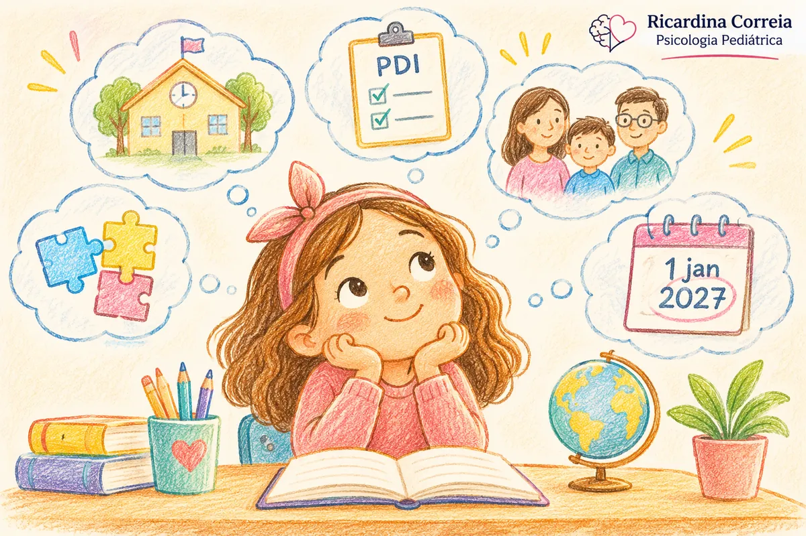
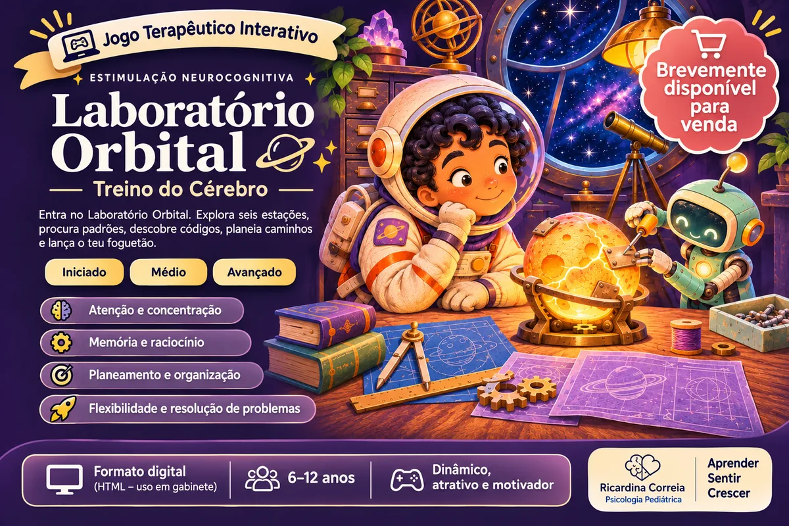

Nem sempre é só uma fase.
Há dificuldades que se explicam pelo neurodesenvolvimento da criança, outras que passam com o tempo, e outras tantas que não. Artigos, ferramentas e recursos práticos sobre desenvolvimento, escola, emoções e relações, para quem acompanha crianças e jovens todos os dias.
Novidades
O que há de novo
A lei dos apoios na escola mudou: o que muda para o meu filho?
O Decreto-Lei n.º 208/2026 aplica-se a casos novos a partir de 1 de janeiro de 2027. Quem já tem apoios mantém os documentos atuais; quem vai pedir apoio passa a ter um único plano por aluno e prazos definidos.
Ler o artigo

Novidade · Em breveJogos interativos
Quatro jogos digitais de estimulação neurocognitiva e de intervenção terapêutica, dos 6 aos 12 anos, para uso em sessão.
Ver os jogos › MaterialPHDA — o essencial
Duas páginas sobre o que é e o que não é, porque varia tanto de dia para dia, e o que ajuda em casa e na sala de aula. Com mais três materiais sobre o tema.
Ver o material ›Do ENEP a Caldas da Rainha
O workshop sobre o desenvolvimento do bebé, no 32.º ENEP, a 3 de outubro, e a tertúlia sobre PHDA, a 24 de setembro. Ver os encontros
Por onde começar
Para famílias
Artigos sobre as situações que aparecem no dia a dia — do desenvolvimento e da escola às emoções e às relações — e materiais que ajudam a levar para casa o que se combina em consulta.
- Ferramentas de apoio
- Guiões para reuniões escolares
- Grelhas de rotina
- PHDA, PEA e aprendizagem
- Ansiedade e humor
- Conflito e relações familiares
Para escolas
Formação creditada para progressão na carreira docente e apoio a equipas na resposta a alunos com perturbações do neurodesenvolvimento.
- Ações de formação e sensibilização
- Consultoria a agrupamentos
- Materiais para a sala de aula
Para colegas
Supervisão clínica e consultoria de casos em avaliação e intervenção no neurodesenvolvimento infantil, presencialmente ou à distância. Supervisora clínica e orientadora de estágios reconhecida pela Ordem dos Psicólogos Portugueses.
- Supervisão individual
- Supervisão de grupo
- Consultoria de casos
- Artigos técnicos